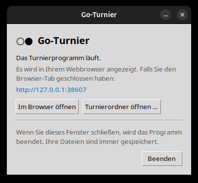
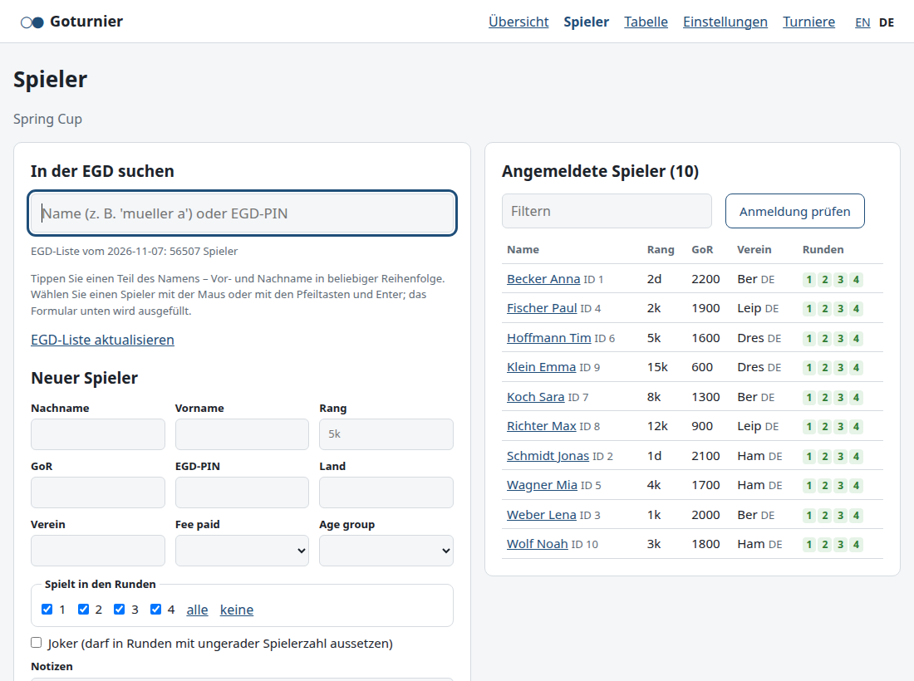
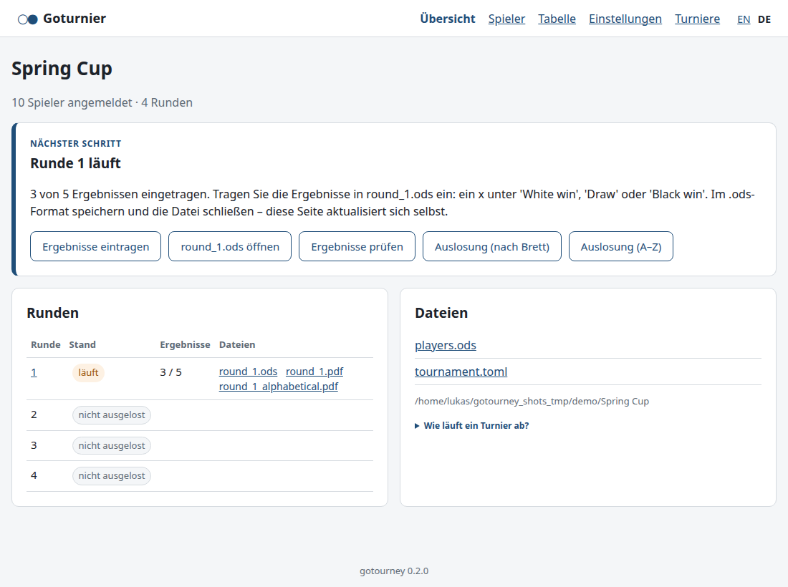
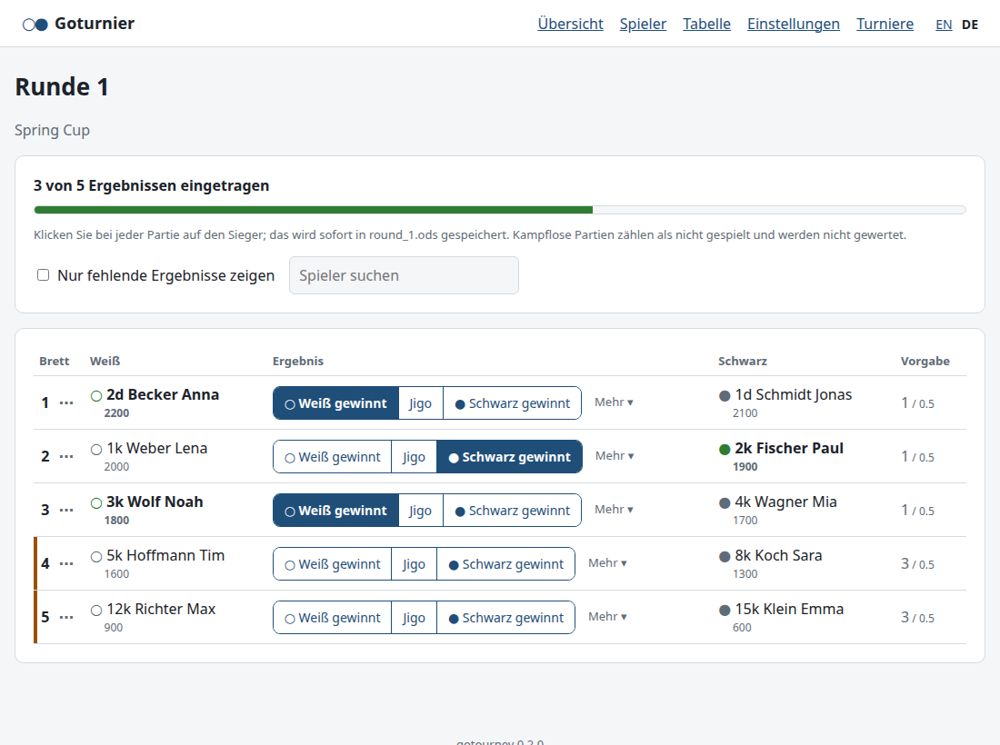

Ein Goturnier mit Turnierwertung (TGoR) ausrichten – alles im Webbrowser.
1. Installieren und starten
Laden Sie das Archiv für Ihren Computer herunter und entpacken Sie es (Doppelklick). Sonst muss nichts
installiert werden.
System
Programm starten
Windows
Ordner GoTournament öffnen und GoTournament.exe doppelklicken.
Beim ersten Start meldet Windows eventuell „Der Computer wurde durch Windows geschützt“: auf
Weitere Informationen und dann Trotzdem ausführen klicken. Tipp: Rechtsklick auf
GoTournament.exe → Senden an → Desktop (Verknüpfung erstellen).
macOS
Go Tournament.app in den Ordner Programme ziehen. Beim ersten Start
Rechtsklick auf das Programm → Öffnen → Öffnen. (Falls macOS sich weigert:
Systemeinstellungen → Datenschutz & Sicherheit, nach unten scrollen, Dennoch öffnen.)
Benötigt einen Mac mit Apple-Prozessor (M1 oder neuer).
Linux
Archiv entpacken und GoTournament/GoTournament starten.
Die Warnungen erscheinen, weil das Programm kostenlos ist und nicht bei Microsoft oder Apple registriert
(„signiert“) wurde. Sie kommen nur beim ersten Start.
Beim Start öffnet das Programm ein kleines Fenster und zeigt das Turnierprogramm in Ihrem
Webbrowser. Das Programm läuft nur auf Ihrem Computer; ins Internet geht nur die Suche nach Spielern
in der EGD.
Im Browser öffnen – falls Sie den Browser-Tab geschlossen haben.
Turnierordner öffnen … – ein Turnier öffnen, das woanders liegt
(z. B. auf einem USB-Stick).
Wenn Sie das Fenster schließen, endet das Programm. Alles ist bereits gespeichert.

Das Programmfenster
Außerdem nützlich:LibreOffice (kostenlos, libreoffice.org), um die Turnierdateien
(.ods) zu öffnen – freiwillig, alles geht auch im Browser. Eine Internetverbindung bei der
Anmeldung, für die EGD-Suche. Ein Drucker für die Auslosungen.
2. Vor dem Turnier
Turnier anlegen: auf der Startseite Namen und Rundenzahl eingeben und
Turnier anlegen klicken. Ihre Turniere liegen im Ordner
Dokumente/Go-Turniere, ein Ordner pro Turnier, und erscheinen auf der Startseite.
Einstellungen (Menü oben): Ort, Daten, Runden, Vorgabe, Preise und die zusätzlichen Spielerangaben
(z. B. Fee paid, Age group) prüfen. Jedes Feld ist erklärt. Dann
Einstellungen speichern.
Spieler: einen Teil des Namens in In der EGD suchen tippen (z. B. becker a) und den
Spieler auswählen – das Formular wird ausgefüllt. Rang, Runden und Startgeld prüfen, dann
Spieler hinzufügen. Spieler, die nicht in der EGD stehen: Formular von Hand ausfüllen
(mindestens Name und Rang).

Spieler: links die EGD-Suche, rechts die angemeldeten Spieler
3. Am Turniertag
Die Übersicht zeigt immer den nächsten Schritt mit den passenden Knöpfen. Folgen Sie ihm einfach:

Übersicht: der blaue Kasten zeigt den nächsten Schritt
Anmeldung abschließen:Anmeldung prüfen zeigt fehlende oder zweifelhafte
Angaben. Dann Runde 1 auslosen.
Auslosung drucken:Auslosung (nach Brett) und Auslosung (A–Z)
öffnen druckfertige PDFs (mit Farben, Vorgabe und Komi). Aushängen.
Runde starten, wenn die Partien beginnen: Runde 1 starten. Ab jetzt stehen die
Bretter fest. Nachzügler können noch angemeldet und untereinander gelost werden
(Nachzügler auslosen).
Ergebnisse eintragen:Ergebnisse eintragen, dann an jedem Brett auf den Sieger
klicken. Das wird sofort gespeichert. Kampflose Partien und Sonderfälle stehen unter Mehr.
Wenn alle Ergebnisse da sind: Tabelle ansehen, dann Runde 2 auslosen – und so weiter.

Ergebnisse eintragen: ein Klick auf den Sieger
4. Nach der letzten Runde
Tabelle (Menü oben): Siegerehrung – Folien mit allen Preisträgern (PDF, im Vollbild zeigen).
Welche Preise es gibt, steht in den Einstellungen.
Wandtabelle → Erstellen: die Endplätze. Die Schreibweise von Namen können Sie in
wall_list.ods korrigieren.
EGD-Ergebnisdatei (.h9): an den Ratingverantwortlichen Ihres Landesverbands schicken.
5. Gut zu wissen
Alles ist eine Datei. Alle Daten liegen im Turnierordner: players.ods,
round_1.ods, …, tournament.toml (Einstellungen). Sie können die .ods-Dateien
jederzeit in LibreOffice öffnen und dort ändern – die Browserseite aktualisiert sich selbst.
Immer nur einer: Solange eine Datei in LibreOffice offen ist (🔒 im Browser), kann das Programm sie nicht
ändern. Speichern (im .ods-Format bleiben) und schließen, dann im Browser weitermachen.
Sicherungen: Vor jeder Auslosung und jedem Rundenstart werden alle Dateien im Ordner backups
gesichert. Zum Zurückgehen eine Sicherung in den Turnierordner entpacken.
Neu auslosen: Eine Runde, die noch nicht gestartet ist, kann neu ausgelost werden (z. B. nach einer späten
Absage). Einzelne Bretter ändern Sie von Hand über das Menü ⋯ neben der Brettnummer.
Sprache: Die Browserseiten wechseln Sie mit EN / DE oben rechts; die Sprache der Ausdrucke ist eine
Einstellung.
Wie alles funktioniert: TGoR, Vorgabe, Auslosungsregeln, Preise und die Dateien sind ausführlich in der
Anleitung.pdf erklärt.
Probleme? Zeigt die Browserseite einen Fehler, lesen Sie die Meldung – sie sagt, was zu tun ist.
Startet das Programm nicht, starten Sie es erneut; läuft es schon, öffnet sich einfach der Browser.
Die Protokolldatei gotourney.log liegt im Einstellungsordner des Programms
(Windows: %APPDATA%\gotourney, macOS: ~/Library/Application Support/gotourney,
Linux: ~/.config/gotourney).